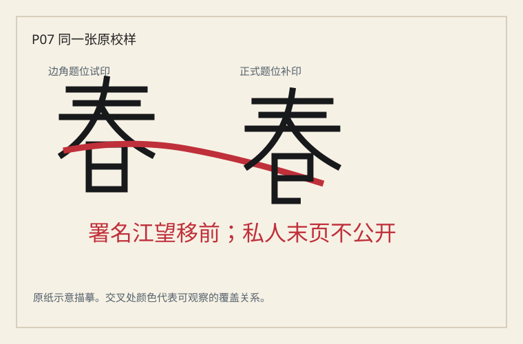
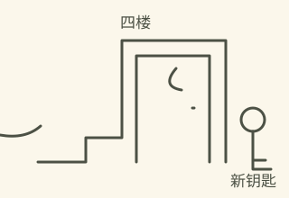
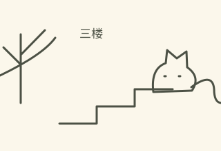

第七次校样 主持人册 含剧透
合作剧本杀文本定稿。尚未真人试玩。玩家册每个角色独立分页；主持人册含全部剧透。
在浏览器中打开后打印，建议A4、缩放100%、关闭浏览器页眉页脚。可按目录选择需要的页面。卡片以章节形式排版，可整页使用或自行裁切。
proof-seven/host-manual.md · 以对应Markdown原稿为准
第七次校样 主持人手册
第三部独立作品，六人合作还原与创作，预计90—120分钟，快桌60—90分钟亦可。时长未经真人验证。此册含全部剧透；前两部不需要读，也不与本作共享人物或世界。
先读design.md、证据P01—P17、stations.md与endings.md。人物亲历、原物和录像不能即兴改动；主持人可用自然语言讲，不要求逐字朗诵。
一 准备材料
准备六本角色本、入场页、共享工作桌、P01—P17、Q01—Q08、R01与三个工作台场景。用写了名字的纸片摆人物位置，用两张白纸对折套成八页书；无需真机器、刀具、重物、透明膜或印刷知识。
分层卡甲乙丙是透明SVG，屏幕可叠；普通纸打印时并排排序，同样可玩。原纸成品图保留米色纸底，分层片本身没有不透明底。两次“春”在不同位置、同尺寸；绝不把“后印断字”解释成擦掉前印黑笔。
若用打印包，分发册每个P/Q/R或场景玩家部分独立分页，已排除主持人答案。不要把design、此手册、证据末尾答复、workbook末尾答案连同卡一起给玩家。Q03含私人原页，先交陆与许，公开拼册可直接用同卡的空白替页；不以纸数逼公开。
二 开场 不先开案情大会
让各人读本约10—15分钟，同时可拿个人物件牌；互相递本合法。请每人只说角色名和现在最想处理的一件事，不轮流念完整时间线。
介绍今晚起点：你们来要回江望的署名，也各有一段尚未说清的旧记录。顾砚生在后室，既定校刊直播刚结束，许柚发现他倒下，报警完成。故事从20:45以后开始，20:32—45的发布是角色真实经历，不要求真人演足十三分钟或演一场推搡。
发P01、P02、P07与材料目录，桌上放三台标题、屋图、散页。P03—P17可随时翻；要有人带出事实时问对应角色即可，不用固定问句。原物回传尽早，结案前全部可得。也可以一开始把所有证据摊开，快桌照常运行。
推荐开场话：
“这不是一个要你们互相骗过去的晚上。那段直播是真的，纸上的批注也是真的。要检查的是：你们用这些事实证明了什么。”
把“顾在断字出现后才批过，所以32以后仍活着”只写成梁的说法或待核推论。不由警方或旁白替它宣布客观成立。玩家一开始就否定它，照认，不用强行把他们带进坑。
三 三个工作台怎样运转
建议两三人先各挑一台，也可以所有人先围纸层台。没有行动次数与“第几轮才解锁”。现场推理、作品拼版和作者联系可并行。
每台用stations.md的玩家部分。大家摆出一个产物就放进共同成果区：时序条、人物位置、B17核验、新页次、真实回执。不要让一位擅长讲话者替所有人排完；可以问物件主人“这个先交谁、你要核哪一条”，把决定交回本人。
每5—10分钟确认是否有一组需要把发现分享出去，而非要求全体轮流汇报。已经明白的步骤直接跳过。无专业知识、不爱表演的人也能指位置、排卡、提问题和决定收件人。
纸层台若问孟立即解开，允许。幕后没有一个“必须沉默的印刷工”。把时间用于检验后室机会与作品选择，不为了保谜否认真实亲历。
四 案件的准确解法
纸没有说谎
P03完整字试印20:28→P04顾亲批→P05断字补印20:33。P07直接可见左黑被红压、右黑压红；同张纸两次过机是正常功能。沈20:30已回前厅签R04，所以亲批在20:28—20:30间。不能把第二次印刷时间自动赋给较早的手写。
这给的是亲批时段，不是把作者知道的20:29强塞给玩家，也不把它说成全案最后活人端点。P17还拍到20:30顾亲到前厅入口送授权并正常应答；这才把后续调查起点接到连续记录上。
不在场证明仍是真的
P02全体20:32—20:45在前厅持续入镜保持真实。不新增假直播、替身、钟差或秘密通道。真正该核的是20:30顾返回后区，到20:32全体入镜之间。
P17从顾亲交授权的活人端点连续覆盖唯一后区入口到32，只有梁进入和出来。32之后所有已列在场人又可核在前厅或装卸区，没有另一个先藏后室一直不出的人。它不拍攻击，不单独给死因。
谁的行为连到致死攻击
P08区分较早额头擦伤与颈部带状压迫致死；不能用后来见活人单独免除早伤责任，也不能凭韩空白定罪。
P10的B17：本人领用→20:30完整在手→20:32残票仍在其口袋→后室小角与残票在断边、斜线和骑缝标拼合。它连接梁与现场，单独不证明杀人。
合并P17唯一进出机会、P08攻击、P10物证、P11否认进屋后改口、P13复仇争执，可确认本故事的真凶为梁。作者事实20:31攻击，不要求玩家推出精确一分钟。正式司法处理留后续，复盘不添加新证据、认罪书或隐藏证人。
若玩家提出“梁争执后别人再杀”，用P17的实际入口范围和32后全体位置检验，不编新监控。若只读到部分材料，把相应待查标清；材料齐全以后可以闭合，而不是永远只剩一个猜测。
五 人的理由与可直接采用的办法
- 梁报复父亲被诬，是真实动机；杀人不因此正当。他借最终校样话术脱身可能当场失败，不能把他塑成知道一切的神级犯罪者。
- 顾确实侵占署名、利用学徒。被害不取消旧伤，今晚被证据逼着改署名也不自动买到宽恕。
- 陆与许拆私人页可即刻给授权。不要让善意角色用沉默保护作者的反转。
- 江望可直接电话，问书为谁写就讲。提前知道亲情背景是合理发现，不影响案件需核原物。
- 韩的R01可以开场触发。没有恢复也不堵案情，陆见闻与独立材料能查。不能让一个追加本替所有人定罪或洗白。
- 联系快递立即冻结，不演电话不通；警方照收资料；电子版、临时勘误与暂不重刊均有效，不坚持老机器才算努力。
六 作品不是奖励道具
按workbook.md先排四页正文，再用两张折纸排八页。文意路线为校门、十二级台阶→豆花窗与树→三楼猫→四楼门；Q编号并非页序。让玩家实际翻一次，看有没有倒页，或用电子预览逐页检查。
署名页和更正页留玩家填写范围，江望可核读。私人原页放8或用空白替页，作者与陆任何一人不决定就另封，仍可完整折成书。若只做私人寄本，写明用途，不冒充已获公开授权。
梁炳被诬的事实可另行更正，不必塞进江望的作品。玩家可以追责梁，仍还梁父一个清白名字；也可把未核部分交下一位经手人。这不是一场必须证明自己善良的测试。
七 收尾与时长
使用endings.md，根据真实成果选择，别全读。先确认案件重建程度，再交还名字与作品，点清三箱120册、三个预览渠道实际通知到哪里，最后寄出或封存本子。
可以只发更正、暂不重刊；可不公开私信；可早破案后多做作品；可不查案将证据交警方。不要用突然发车、稿件烧毁或新伤亡惩罚没有按作者剧本做的人。
标准估计90—120分钟：读本10—15，开场5，三个台合计40—60，联系与核对10—15，收尾10—15。快桌各台秒懂可60—90分钟结束，不为标题“第七次”强行加七轮。趣味、难度和时长仍需真人一桌记录。
八 最后核对
开场目录含P17；尸伤、B17和入口预录在结案前都可得；没有把晚印当晚签；没有把现场接触当孤立定罪；没有用唯一失忆者当嫌疑标签；没有把私人页公开当拼书前置；没有给未做的勘误和冻结自动打勾；没有要求玩家原谅或接受某种情绪。
proof-seven/evidence.md · 以对应Markdown原稿为准
第七次校样 证据与查询材料
主持人分发源稿。P01—P17的标题与正文可给玩家，文后答复规则仅供主持人。均在开场可申请，不按幕扣住；目录完整公开。P08、P10的原物由警方封存，玩家拿副本与描摹；回传可尽早，结案前必须取得，不在最终讲解补决定性事实。
P01 人与屋
在铺名单：孟青、沈舟、陆芹、韩照、林祈、许柚；旧主编顾砚生；发行协调梁晏、发行商冯煜、顾砚生儿子顾霁；医生罗师傅与一名快递员。作者江望在外城。没有未登记访客。
后室只有一扇通向短走廊的门，走廊经唯一后区入口连接前厅。侧间字盒柜与装订台都在前区，不必经过后区入口。没有暗门、藏人或可替机器操纵的攻击装置。前厅压机只用于印刷，停止时没有自主动作。
时钟已经核对一致。所有原始记录上的钟点都是真实钟点，不设钟差。
P02 真的全体不在场
20:32—20:45，六名玩家和梁晏、冯煜、顾霁九名发布参与者均在前厅两机位原片中，脸与位置持续可辨认，没有离席。罗师傅也在前厅镜头内照看韩照。
画面实时，无剪辑、延迟或替身。压机在镜头范围内，孟青20:33的操作属于这段原片。快递员在装卸区，另有前门与装卸区工作记录相互核对，没有进入后室。
这份记录只证明20:32之后，不证明20:30之前或开播前两分钟。
P03 一枚字的两个状态
20:28，孟青用一枚大标题铅字“春”，在试纸左边角印下题位样。许柚见过移交沈舟的纸，另留一张完整字试纸。
20:32，孟搬字时右下笔划崩缺，许与直播镜头都看见断角。他保留字与断角。此后同枚字只能留下缺右下笔的印面，不会自行恢复。
大字只有这一枚，同一大小、同一边缘细节。普通小号字与复印件可分辨，不能当作同一原印。纸能多次过机，但后一次不会擦掉已有黑笔画。两次“春”印在不同位置。
P04 沈舟确实见到活人
沈舟可立即确认：孟最后一次把边角题位试纸交来后，他拿它进后室。顾砚生当着他用红笔写了“署名江望移前；私人末页不公开”，同时画了一条跨过边角题字和右侧预留题位的长线。
顾能与他正常交谈、取笔、交回原纸。不是沈隔门听到声音，不是替别人转述。沈没有看钟，不能给这个会面报精确分钟。
之后沈回前厅签收原稿袋。顾落笔发生在签收之前。签收的同时，顾从走廊来到前厅入口边，亲手交来补充授权页，回答沈关于末页的具体问题，再返回后区；P17记录了这段正常交接。此时的顾已不是20:22推搡现场那个倒地姿势。
P05 补印者可以直接说
孟青说：“20:33我在右侧正式题位补印，左边角的完整字不用再打。我取过来的这张纸已经有红批。补印时字已经缺角，直播里能看见我操作。”
他没有看见顾写红字，不知道那次会面的钟点。可以当场配合检查、重演纸张过机顺序，专业操作不用玩家做。
P06 二十点三十分的签收
快递原单R04：20:30，江望寄来的原稿袋交沈舟本人，扫码记录、签收与快递员见闻相符。没有代签或补填钟点。
沈自己记得：见顾亲批在前，回前厅签袋在后。快递员不证明沈此前在哪里，也不证明袋中每页内容。
P07 同一张原校样

这是真实同一纸张的观察描摹，非拼接页、假签名或复印替换。左边角完整字、右正式题位断字大小一致，来自同一枚字的两次印刷。
放大交叉点的可见关系：左边黑墨被红线压住；右边黑墨压住红线。图中红线与红批是同次落笔，笔路连贯。此观察可靠，不需要玩家判断现实油墨化学或干燥速度。
可领取甲、乙、丙三片，按能形成这个交叉关系的顺序摆放。纸层只证明相对先后；给活人会面定范围，还须结合P04、P06。
P08 现场与初检
许柚20:45发现顾倒在后室校对桌旁。警方封存现场，不要求玩家搬动遗体、演出攻击。
罗师傅与到场人员记录的给定专业观察：致死伤为颈部带状压迫，现场棉装订带与该伤相合；额头较早的表浅擦伤不是死因。正式后续由警方完成，故事不要求玩家猜病理或死亡精确分钟。
死者手边、校对桌内侧发现B17取件条撕下的一小角。装订带是印坊公共材料，人人可能接触，不能仅凭拿过带子指认个人。
P09 早些时候的推搡
陆芹的直接见闻：20:22顾夺她带来的原稿，抓住手腕。韩照推开顾，顾额头磕到桌边；随之纸架倾倒，韩被撞伤。20:24她带韩出，顾自己站起骂人。她到前厅立即联系医生。
韩20:22—20:26局部记忆空白，有实际撞伤与照看记录。20:26以后记忆连续。他可以问陆发生过什么；这不是必须等到最后一幕才准讲的事实。
伤害、愤怒与责任应分别查，不凭谁有空白就认定谁杀人，也不凭后来有人见顾活着便单独判定先前所有行为无害。
P10 B17的两半

领用登记：20:05，梁晏本人领B17取件条，用于本次重刊运输核对。B17为唯一流水号，票上有斜向印线与骑缝小标，不只靠颜色认件。
20:30，沈签收R04时拍过装卸地址板留档，画面边缘含梁拿在手里的完整B17；原图钟点与R04相互核对。20:32开播时，原片可见梁将残缺的同张票塞回胸前口袋。这只是可见原物状态，不是对杀人的录像。
小角由警方在后室死者手边取得；较大的残票由梁在原物核对时交出，均记录封存来源。两半断边与斜印线、骑缝标连续拼合，图示可以自己拼。它证明梁的随身物与后室发生了接触，接触的经过仍须与案发窗口、见闻和其他材料一起解释。
P11 梁的两次说法
首次被问开播前做什么，梁说：“20:30以后我就在前厅等开播，没再进后室。我只拿过最后校样。”这是他的陈述，非旁白事实。
沈可确认自己20:30签袋之后，留在前厅，从入口旁看见梁往后室方向走；他没有看见屋内攻击。完整B17与开播时残票的状态也可核对。
对出P10后，梁改称：“我进去争了两句，他扯了我的票；我走时他还好好的。”此句也需核验，不因他承认进屋就自动等于承认杀人。之后他要求由警方继续问，不让玩家逼供。
P12 每个人的片段
20:28—20:32期间：
- 孟在字盒柜与前厅间取工具，许见他把试纸交沈，不能替每一秒担保。
- 沈先到后室，再回前厅签R04，随后取作者授权；亲眼见顾正常交谈，也见梁向后室走。
- 陆、韩、医生在前厅照看伤情，陆中间去侧间取过水。医生提供实际看见的片段，不把普通照看吹成全程监控。
- 林在前厅与侧间核旧工作记录，能出示取出的文件与顺序。
- 许在装订台核私人页授权、看交来的纸，20:32回前厅开播。
- 冯在装卸口核箱，顾霁在前门打电话；这些来源不能未经核对就延长成不在场证明。
以上都是查证入口，不能因为角色互相信任，就把所有未见片段写成已经证实。只有P02覆盖开播后的全体。
P13 两个需要归还的名字
江望的原作稿、早期寄件副本与旧试印能相互对出：《春天借住在四楼》的图文原作出自江望，不是他偷顾砚生的作品。旧刊长期署顾名，需要更正。
另有当年材料交还登记与未被采用的原说明：梁炳并未偷走排印资料，顾知道是自己同意借出后又要找人担责。登记、顾的原始业务备忘与经手人江望可分别核对，不能仅凭梁儿子的一句控诉下结论。
顾今晚的工作便笺：“署名按江望改，梁炳那行不动，旧事不再展开。”梁承认来要求顾也撤回对父亲的指控。这解释争执，不替他任何暴力免除责任。
可以同时查谋杀、还江望署名、还梁炳清白；不能因为梁晏涉嫌杀人，就继续把他父亲写成贼。
P14 旧刊与六次确认
原作被改署名后，旧刊的公开版本缺少江望原来写给女儿的称呼，把私人语句当成顾的励志随笔。六人当年各有保留、误判或顺从，不是全知。
本晚六份真签条分别只确认各自页的排字、图稿或装订检查。没有一张授权他人替江望决定署名、替陆芹公开家信，也没有一张保证此后所有版本都相同。
林祈保留的旧记录曾把“建议作者匿名”写成“作者接受”；这份未经确认的记录需要由林自己更正。它不能因为今晚做好事就被销毁或宣布误会。
P15 作者与收件人的意愿
江望的可直接核对授权：愿意以本名重刊公开图文，要求署名在作品前面；私人末页原是寄给女儿，不随公开重刊自动发表。若想公开，须作者和收件人各自同意，任一人暂不决定就先另封。
陆芹、许柚拆页与裁开旧刊有此授权。直接问即可解释，不能把她们写成怕被误会却硬不肯说的人。
江望愿意接受电话，他能说起作品、寄宿学校、四楼和女儿，但没亲历今晚后室。他不是拿一通电话就能补齐谋杀证据的全知证人。
P16 发出去的是什么
一百二十册旧版，装成三箱，每箱四十。出版物仍署顾名，末页里有未经此次明确同意继续公开的私人文字。21:10预约快递尚可冻结；打电话可立即获得停止发车与暂存回执，无隐藏失败条件。
已有预览电子版寄给三个渠道：门店展示、读者群管理员、地方刊物编辑。可以分别发勘误与正确文件，不要求先判定杀人者；也可暂时只告知“署名与末页需复核，先停转发”，不替作者抢作最终声明。
停掉运输不是完成重刊。还需确认署名、哪些页替换、私人页怎样保存、旧声明如何撤回。纸本、电子更正、勘误贴条都有效，不因不用老压机而失去成果。
P17 开播前的入口预录
一号机按原定发布流程，从20:30开始预录，镜头只覆盖前厅通向后区的唯一入口和长桌一角，不是全屋监控。文件与20:32起的原片连续，钟点真实。这个预录入口从开场就在材料目录里，可立即检查。
开头同步拍到沈签R04，以及顾从走廊来到入口边亲手交还补充授权页。沈问“私人末页还是另放？”顾当面答“别跟公开版一起发”。人物、声音和动作可核，是顾活着的直接端点，不是仅凭一张纸推定。
随后顾回后区。从此端点直到20:32，入口连续可见：只有梁晏进入后区，随后也只有梁出来。其余人没有从这里进入或出来。后区无另一通路；32后所有已列人员都在前厅或已核的装卸口，不能再假设另有人藏在后区。
本记录不拍后室内攻击，须与P08的致死伤、P10现场物、P11说法变化和动机共同解释。不把顾在30又露面，误读成“最终校样的批注发生在30之后”。
主持人答复 这部分不发玩家
梁：可直接承认父亲被诬、自己恨顾；先给P11原始说法，证据对出后改口。关于校样，他说“顾已经批了最终校样，我们开播后都在这里”，不要由旁白给他盖真章。他的谎话可以被立即纠正。不要续编隐藏人、神奇工具或新不在场。
冯：关心货与成本，答“先停可以，重发哪版你们和作者确认”。可以烦躁但不能为了推动剧情拒接合理电话。核前门记录就给，普通争执不是犯罪证据。
顾霁：最初想保父亲名誉，出示原件后可承认“不替他否认这些”。能协助找原稿，不被强迫立即谴责父亲或原谅梁。他没看见杀人，不新增关键目击。
江望：讲作品与女儿，知道旧事只答自己亲历。直接问书为谁写就回答，不以难言苦衷吊胃口。可以解释“我那时想先让她有一本认路的书，后来才知道署在谁名下不能随别人”。不会突然原谅顾。
医生/警方：给已有专业观察和记录，核玩家明确提出的问题；未知答待查，不等于没有。正式法律结论由后续处理，但主持人在复盘可据已给材料确认故事真相，不再添加新认罪书。
proof-seven/stations.md · 以对应Markdown原稿为准
第七次校样 三个工作台
主持人执行稿。各台“给玩家”可分发，“核验与回响”仅主持人读。三台可并行、往返，没有必须先过第一关才准看第二关的锁。核心纸层如果一问就解，跳过重复操作，不要求演惊讶。
S01 纸层台
给玩家。桌上是P03—P07、三张分层卡和纸页流转带。每次印刷、手写、搬放都先分开，不把“最终校样”当一个瞬间。
任务：
- 按原图两处交叉点的遮盖关系，排分层卡。普通纸可并排排序；有透明介质或使用屏幕时可叠放，不需额外购买材料。
- 把“顾当面落笔”放入有依据的时间范围，写出上下界各来自哪里。
- 在现场图上标出应重新查的时段，保留已经证实的直播，不把整份记录划成假。
你们可以先问孟、沈、许，也可直接看原物。任何相同效果的方法都算完成。
核验与回响。唯一满足图中覆盖的是完整字黑墨→红批注→断字黑墨。完整字20:28，沈亲见活人落笔，且20:30已回前厅签袋，所以会面在28—30之间。第二次印字33，不把亲笔会面推到32以后。
不要要求猜精确20:29或死亡20:31。缺一条时间依据就把它标待查，提供对应目录，不直接报答案。此台成果是玩家自己填出的时序卡。
这时可由孟或许把原图夹在两张试纸中间。让另一组拿走新时段去查现场，不等主持人宣布“现在进入第二幕”。
S02 现场台
给玩家。有屋图、人在场卡、P08—P12和P17、B17三张原物描摹。先把三个问题分开：顾受到哪种伤害、谁何时接触过后室、哪件随身物发生过什么变化。
你们可以从任一假设出发：
- 顾死于20:22那次推搡；
- 顾是在32后被人接近；
- 顾在32前遭到另一种攻击；
- 另一个由你们提出、能对照现场的经过。
把支持与反驳材料各放一边。问本人并核独立记录，不仅比较谁说话像坏人。B17可以按断边和印线拼；同编号只是线索，不等于已经证明攻击。
请写一份短案情：最后确定活着的范围；需要调查的接触时段；B17两半来源；对谁的说法需要追问；还不能肯定什么。可用图或口述，不要求每人投票。
核验与回响。P04活人见面、P08不同致死伤使“早推搡解释全部死亡”不成立；P02排除32后离席杀人，不能退回“视频也许是假”。梁的完整票30→残票32、后室纸角、改口与进出、复仇冲突共同指向他。普通带材谁都能拿，不能孤立使用。
若玩家很早指梁，先核依据，已有论证就认可。对“梁只是争执撕票，别人后来杀”的追问，用P17从20:30活人端点连续覆盖唯一入口到32、仅梁进出的范围，加上32后全体已定位的记录检验。不能临时添加新摄像头或证人；P17本就在初始目录。结合尸伤、物证和动机即可闭合。玩家自己尚未找到某环时可以标待查，不以猜中名字冒充完成全链。
主持人可据既给全部材料在复盘确认作者真相，但不得用一张此前不可得的认罪书锁定。若桌上只愿意重建到重点嫌疑，保留他们的论证程度，故事照常向作品线继续。
S03 作品台
给玩家。Q01—Q08顺序已打乱。先不把页码印上，找出四段从学校到家的连续路线，再给它们安排页位。封面、署名、更正、私人页另处理。
把八页放到两张对折套页上。可以先在白纸写页位贴卡，再实际翻一遍，确认从校门能走到四楼门。私人页可用空白替页，不能为了装订完整逼别人公开。
然后做三个选择，留实物或文字：
- 哪些旧版和预览要停、通知谁，拿到哪种回执？可以立刻打电话，模拟发送仅在故事内进行，不实际发外部消息。
- 新署名页写谁，本次整理贡献如何标，与作者确认了什么？可以先更正、不立即重刊。
- 私人末页公开、另封、仅寄给收件人，还是双方暂不决定？要有本人意愿，不拿主持人觉得感动替代。
核验与回响。正文顺序Q07→Q08→Q04→Q01，页位3—6；其余页按workbook模型。至少拿两张纸实际折一次，或在电子页序中逐页翻，不能只口头说“拼好”。不同公开范围均有效。
运输可立即冻结，不能假造电话不通。选择勘误贴条时，署名改正和隐私处理分开：写“勿读”不等于收回私人内容，应按双方意愿真正抽页或妥善遮蔽并核看；已发预览只能通知更正停转，不谎称网络痕迹已全部抹掉。
在完成的本子前面留原作者名，再由每个愿意的人给本次整理写一种具体贡献。有人只愿更正自己那份“已核”，也有位置。
S04 可以立即联系的作者
给玩家。江望接电话。不考暗号，不要求陆芹先原谅任何人。
可以问他原作、梁炳旧登记、哪些页可公开。关于作品，他说：
“我那时跑运输，她在学校住，回家那段坡路总认错。先画路，后来见到什么就加一点。我没想写谁怎么成功。那扇门她也有钥匙，不是客人来敲门。”
关于私人末页，他可以请陆自己决定，也保留作为作者是否愿公开的选择。其当前授权在P15。他不知道今晚谁进后室、什么时候死，不为命案作远程目击。
核验与回响。直接联系可提前得到情感背景，欢迎。这个场景不是必须藏到最后的“爱之反转”。仍须核原件、页次与授权，作者一通电话不替玩家印好一整册，也不替他们更正自己的旧记录。
S05 韩照的追加记忆
给玩家。你可以问陆，也可以看看纸架图与原图的护角，决定是否继续回想。有些动作即使当时不记得，仍能用别人的见闻和物证查到。
核验与回响。按recollection.md给R01，触发可从开场发生。它不承担认罪或洗白，不改变任何已给客观事实。韩可自己读、请同伴读、只听简述或跳过。恢复记忆之后，案件依据仍写在现场台，而不是“因为他想起来了所以结案”。
proof-seven/workbook.md · 以对应Markdown原稿为准
春天借住在四楼 散页与拼册工作台
Q01—Q08是可分发散页，编号不是阅读顺序。正文四页不印页码，先靠文意排，再套入折页模板。原作图文出自江望；本次修复、校对等贡献另行注明，不把帮忙恢复的人冒写成原作者。
Q01 门上的月牙

四楼最里面那扇门，有一道月牙似的划痕。不是暗号，是我上回搬柜子碰的。
你把新钥匙放在鞋带旁试过了，我还记得你说比旧的轻。若我赶不及回来，你先开门。灶旁蓝罐里有零钱，豆花的碗明天再还。
原图边线：楼梯向上收在一扇带月牙划痕的门，门旁画一把小钥匙。来路接着猫蹲的三楼平台。
Q02 谁的名字放在前面
原作图文：江望。
本次整理与修复：________。
核读者与日期：________。
选择公开版范围：□原作公开图文 □更正页 □私人末页已另行取得双方同意 □私人末页另封。
署名不是替作者决定一切。这一页可以请江望本人核读，也可以先标“待本人确认”，不伪造签字。
Q03 一页可以不公开
私人原页，先不放入公开小册。
小芹：
你上次说，从窗子看我回来的车，总把送煤的也算成我的。以后别一直站窗边等。我不赶得及，会托吴姨带话。
你那双鞋又小了，周六带着一起去换。认路书画到这里，鞋不合脚的事可别又不说。
爸爸
公开替代页：本册此页留空。私人原页另封，未列入本次公开范围。后续如公开，须由作者与收件人分别确认。
选择替代页不影响八页小册折合，不以“拼书必须有末页”逼人公开。
Q04 那只不肯让路的猫

过了树，还要上两层。三楼的人家养着一只猫，白天睡在窗台，傍晚睡在楼梯口。
它把尾巴横在路上，你可以绕过去。别学我叫它“师傅”，那家阿姨听见，以为我又要借她家的锤子。
原图边线：豆花窗外那棵树的右半边接上此页左边；楼梯到猫蹲的三楼平台，继续往上，去向尚未画到的四楼门。
Q05 封面
春天借住在四楼
一册认路的图画笔记。
这张封面可以保留原标题，也可请作者同意后改题。不要把顾砚生的旧署名直接贴回去；前页作者信息需按已核材料填写。
封面图：从校门到四楼，一条路伸进一扇有月牙划痕的门。
Q06 更正可以和作品一起留下
本次核读所确认的事实：
□旧刊将江望的图文署为顾砚生，本次更正为江望原作。
□“建议匿名”不等于“本人接受匿名”，旧工作记录由记录者逐项更正。
□现存交还登记与原说明不支持梁炳偷取排印资料，相关旧指控应另附来源更正；梁晏的行为不能替其父继续定罪。
□私人末页是否公开，由作者与收件人决定。
尚待核实、不在今晚替别人保证的事：________。
已通知的旧版或预览渠道：________。
可以删去尚未核完的一项并留待查，不要求漂亮地填满所有空格。
Q07 先数脚下的台阶

从学校回家，不要数亮着的窗。先数脚下的台阶。
校门口那盏灯有时不亮，你也认得第一块缺角的砖。往上十二级，墙边会有一个卖豆花的小窗。
原图边线：此页从校门起笔，上行楼梯在右边断开，缺角砖后有十二道短阶，接向下一页的小窗。
Q08 没开窗的时候

台阶数到十二级，你就看见卖豆花的小窗了。老板若没开窗，也别站在那里等。
转弯那棵树还在。树底下总落一圈小果子，鞋底沾上会滑，先在边上蹭掉。到了春天，树影会先伸到墙上，比我回来得早。
原图边线：左边接十二级台阶与小窗，右边是一棵跨过纸边的树；树后上行去三楼平台。
折页模型 玩家可读
准备两张普通白纸对折，外张套内张。先用铅笔写页位，再把散页内容贴上或简写，不必有双面打印机。若用模板打印，按页位手动核对；不把打印机翻面方向当谜题。
| 纸张与面 | 左页位 | 右页位 |
|---|
| 外张外面 | 8 | 1 |
| 外张里面 | 2 | 7 |
| 内张外面 | 6 | 3 |
| 内张里面 | 4 | 5 |
先排正文四页，让路线连贯；封面放1，署名放2，更正放7，私人页或替代空页放8。装入公开版前核作者与收件人意愿。
纸本不是唯一完成方式。把这些页排成电子本、把新署名与勘误贴到未发旧册上、只发更正并暂缓重刊，都有效。需要真的说清哪一版送给谁，不以口头“以后再弄”冒充已经完成。
主持人顺序 这部分不发玩家
页1=Q05，页2=Q02，页3=Q07，页4=Q08，页5=Q04，页6=Q01，页7=Q06，页8=Q03的获授权版本或空白替页。
正文顺序由路线限定：校门与十二级台阶→豆花窗与树→树后三楼猫→四楼门。可直接核图边与文字，不凭文学品味判输赢。保留两种以上公开范围：私人页另封、双方同意后公开；两种均可折成完整八页。
将“梁父被诬”的一行留给玩家自行核实和决定表达，不在收尾突然把它读成强迫原谅杀人者的道德测验。
proof-seven/recollection.md · 以对应Markdown原稿为准
韩照 追加记忆R01
主持人将R01标题以下正文单独给韩照玩家。可从开场触发：韩主动看纸架图并问推搡经过、查看自己原图的折角，或直接请求回想，都给。不设固定幕、不需猜关键词、不强求创伤表演。没触发也不阻塞，陆与独立证据能查清。
R01 纸架倒下以前
你先看见的是陆芹被攥住的手腕。
顾砚生要拿她带来的原稿。那只手不是在指一个错字，也不是要借纸。他越说越急，把她往桌边扯。你伸手挡了一下，没挡开，就推了他的肩。
他退后，额头磕到桌沿。你没有看见他死去。几张图从稿袋里散开，你转身去拢，纸架往你这边倒。你记得自己把最上面那张画压到身下，随后声音忽然远了。
你可以把这段告诉大家，也可请陆补上她当时看见的部分。它让你认回自己的动作，不证明此后屋里没人再来，也不让你的推搡自动变成无关紧要。案情里哪些伤害由谁造成，仍按纸、时间与现场分别核。
你在折角画上看见那把钥匙，忽然想起小时候陆把它画得很大，说钥匙不能画丢。你把原图拿正。这一回，先让它完整地回到她和作者手里。
proof-seven/endings.md · 以对应Markdown原稿为准
第七次校样 收页与结局
主持人用，含真相。按桌上的实际成果收尾，约十至十五分钟。三条线可以先后完成，也可以把尚待处理的一条交给下一位联系人。已经解开的部分不重演误会；不要求六人轮流发言。
一 让纸上的时间归位
请玩家把最后确定的纸层与时间条留在桌上。若已经还原，让愿意的人说明，也可以递交成果纸。主持人按他们实际找到的材料逐项回应：
“左边角的完整‘春’，是20:28的试印。红线压在它上面；右侧断笔的‘春’，又压在红线上。顾的批注夹在两次印刷之间。”
沈舟确实见到顾当面落笔；他20:30已经回前厅签收原稿袋。因此这次纸上亲批会面在20:28到20:30之间；P17另外拍到20:30顾来到前厅入口送授权、当面回答问题后返回后区，给出新的直接活人端点。不能用20:33的补印，把会面推到直播开始以后。
“20:32之后的原片仍然是真的。大家也确实都在前厅。该重新核对的，是开播前的经过。”
将早先的推搡、后来的会面和致死攻击分开放。陆看到顾20:24站起，沈后来见过活人；提前提供的专业观察又明确，致死伤为颈部带状压迫，额头擦伤不是死因。韩的空白与推人的责任据实记录，不用他的回忆填入他没看见的谋杀。
案情重建已经形成
把B17两半摆在现场图旁，邀请玩家说清它能证明什么。
B17有同一流水号、连续斜线与吻合断边；20:30还在梁手里完整，开播时已经残缺，一角在顾手边。它连接梁与后室接触，不能单独等于杀人证明。再把P17从20:30确定活人端点连续记录唯一后区入口到32、只有梁进出的范围，梁先否认后承认进去、双方关于梁炳指控的争执，以及独立死因观察接上。
根据这些已给材料，主持人可以确认故事真相：梁在开播前攻击并杀死顾，随后回前厅参加直播；看见补印后的原纸，他借“最终校样”引导别人把批注想得过晚。作者事实为20:31攻击，不要求玩家从材料不足处猜中这一分钟。正式处理留给警方；不增加认罪书、新目击或终幕鉴定。
提前解开，或只完成一部分
早破案就直接确认证据支持的判断，把时间留给作品台。尚缺一环的，在案情纸上写待查与交接人，不替玩家补成全部查明。
若玩家只做作品，把已有材料与现场交警方继续调查。可以依他们意愿，用上面已提供的线索简讲真实经过，明确这是故事讲解或警方后续核查，不说成玩家已经破解。有人不想听案件讲解，可直接进入收页。
二 两个名字，各自归还
把P13与林祈的旧记录分放，别将所有责任挤成一段悼词。
江望的署名。原稿、寄件副本与旧试印相互支持，原作出自江望。公开更正可由玩家与作者确认后，写明旧版错误署顾名、正确作者及对应版本。顾今晚同意纠正，不能撤销过去侵占和利用签字的事实。
梁炳的清白。材料交还登记与未被采用的原说明，能独立核实他并未偷排印资料。为他做更正，不必以宽恕梁晏为条件；梁晏杀人，也不使父亲重新成为贼。梁晏的复仇动机与他的刑事责任分别处理。
梁炳的更正可以提交原指控传播方，另作一份文件；是否放进江望的重刊，仍要问作者。林祈的“作者接受”也另留原记录与修订，写清未经本人确认，不能把原件撕掉就算改正。
顾霁若愿协助，给他一个能做的动作：找出原登记、递交更正或保存父亲私人物品。他可以悲伤，不必替父亲否认材料，也不必当场替梁接受原谅。
三 这一本交到谁手里
将作品台八页模型按玩家实际确认的版本放好：封面、署名、四页图文正文、公开更正、末页。请江望与陆芹各确认一次私人末页的去向。
- 两人都同意公开，按他们确认的文字放入第八页，并记下本次授权范围。
- 任一人不公开或暂未决定，把私人页另封。第八页放空白替代页，或写“私人原页另存，不随本次公开版发行”。八页小册照样完整。
- 若只做私人寄本，在封面或去向单标明收件人及用途，不把它当成已经取得公开发行授权。
纸本、电子版或勘误贴条都按实际选择交付。用电脑改好，和在版框里排好同样算做成；没有当场印刷，就记录已经确认的文件与下一步联系人。
江望可以在电话里说：
“这几页是我给她认路用的。我跑运输，不常在她身边，能画出来的先画给她。后来书出了，我才知道名字和原话都被改了。原来的拿给我看看。”
若陆愿意，把她选定的版本寄给父亲，或现在念一段自己选的文字。由玩家选择哪句、怎样读；主持人不替女儿写一封原谅父亲缺席的信。她也可以只说：“这一页我先收着。”江望答：“好，收件地址我发给你。”
四 哪些确实送出去了
核共同成果区，按实际办理情况放回执。
| 事项 | 已做成时留下什么 | 尚未做时留下什么 |
|---|
| 三箱旧版，共120册、每箱40册 | 停止发车与暂存回执，注明哪些页待换 | 联系发行与快递的待办；仍可按原有条件现在办理，不追加突然停不了的障碍 |
| 门店展示 | 接收勘误或暂停展示的确认 | 具体联系人、待送文件 |
| 读者群管理员 | 收到更正或停转发通知的回复 | 待联系，不能说群里已经全改 |
| 地方刊物编辑 | 收到正确署名、授权版或暂停预览的记录 | 待核稿与发送时间 |
只发了“署名与末页待复核，先停转发”，就如实记这一步，不宣布全部新刊已完成。只冻结货物，也还要留换页与重新确认的工作。没有做的渠道不会自动完成；也不因大家没全清，就临时增加新的伤亡或不可挽回损失。
五 六个人，一次共同重校
桌上留一张空纸。邀请愿意的人从自己的旧记录或今晚的稿上选一个词，改写、加范围或留下问题。也可以只递一件物品给同伴。
孟青可以在“排好了”旁添上“给本人看过”；沈舟可以把“已核”具体写成核过哪一页。陆芹可以决定自己还要追究的事，也选一段想送给父亲的文字。韩照可以把空白段写成“请陆的见闻核对”，再把自己的图接到正文边。林祈可以亲笔撤回“作者接受”，留下该向谁确认；许柚可以为私人页写清保管人，合好另封的袋口。
这些只是可做的动作，不是必须认领的心情。玩家写自己的词，就保留自己的词；没有人发言也继续收尾。
若作品已完成一份，按去向单把它交给收件人或送入寄件袋。若决定不发刊，把原件、已确认的页、待定意见分别装好，写明下一次由谁联系作者。暂不出版也是一个有交接的结尾。
最后请玩家给这一份共同核过的样本写上日期，或只写《第七次校样》。标题不要求七轮流程，纸上留下的是六次各自确认以后，这一次共同检查的结果。
读完与桌面相符的一段，便停：
寄出一份时：“收件人的名字写好了。有人压住纸角，另一个人把袋口合上。电话那头问，明天能不能拍一张给他看。”
暂留一份时：“袋上写着保管人，旁边留着待问的问题。最后一页没有被人擅自填满。你们把它放进已经约好取用的位置。”
案情材料另外交接，原作按本人选择收好。今夜不必替任何人把余生写完。